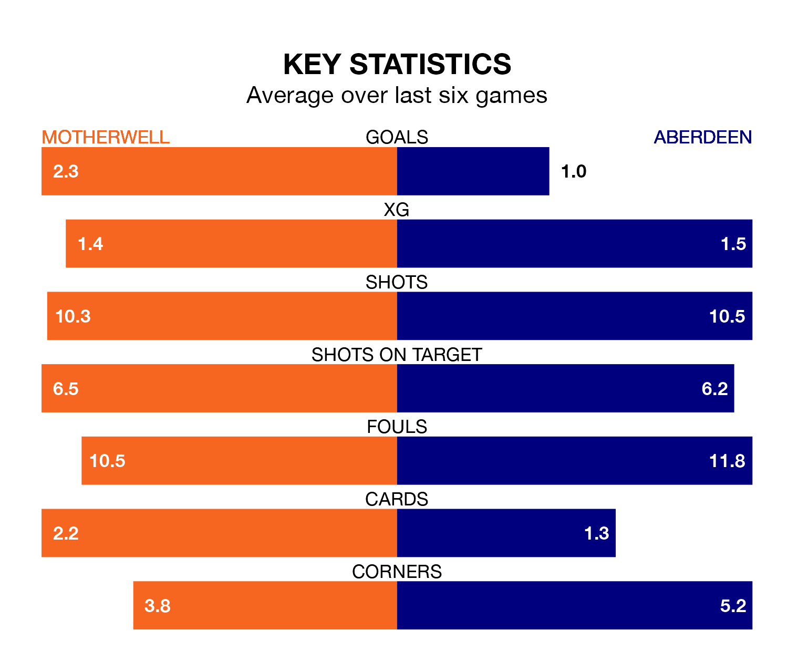

Aberdeen come to Fir Park to play Motherwell on Saturday in terrible form, having collected just two points from their last six games.
The visitors have drawn two and lost four of their last six fixtures, while Motherwell have three wins and a draw.
With 32 goals in 29 games so far this season, Aberdeen are scoring at below the league average rate with 1.1 goals per game. And they are conceding more than average, letting in 48 goals at a rate of 1.7 per game.
Motherwell, meanwhile, are above average scorers, with 1.4 goals per game, compared to a league average of 1.3. They have conceded 1.6 goals per game.
In the last 10 years, Motherwell and Aberdeen have played each other on 32 occasions. Motherwell won 11 of them, Aberdeen 17, and they drew four times.
On average, Motherwell scored 1.2 goals and Aberdeen 1.6 in those matches.
Their last meeting was on February 14, when they played out a 3-3 draw.
In Bojan Miovski, the visitors have one of the league's most on-form strikers so far this season. He has notched 13 goals in 29 appearances, to sit third in the scoring charts.
His goal rate of one every 194 minutes is slightly quicker than that of Thelonius Bair, the home team's top scorer with a goal every 167 minutes, and a total of 11 goals in 29 games.
Aberdeen are 10th in the table after 29 games, of which they have won six and drawn nine, earning 27 points.
Motherwell are two places ahead of Aberdeen in eighth, with seven wins and 11 draws putting them on 32 points.
Motherwell's last match was on March 2, a 2-1 win against Rangers, with Bair and Dan Casey getting the goals for Motherwell.
Aberdeen lost 1-0 against Dundee last time out, on Wednesday.
Saturday's match will be refereed by William Collum, who has taken charge of 13 Premiership games so far this season, issuing one red card and booking 40 players. He has awarded four penalties.
The last Motherwell game Collum refereed was a 3-1 home loss to Celtic on February 25. His last Aberdeen match was their 2-0 loss away at Hibernian on December 3.
Updated: 15:10 (UTC), 15/03/24